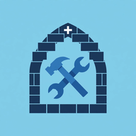
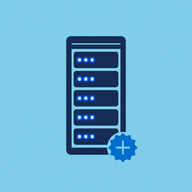
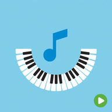

Free
VCM Templates
Create and refine reusable service templates.
Product
A collection of desktop, mobile, and server tools for preparing and running church music services.
Every app has a Try the Demo button that runs it with built-in sample data, with no Server and no network needed.
The apps
Each app does one job well. Use the ones your church needs. The VCM Templates, VCM Services, VCM Runner, VCM Administrator, and VCM Security are free to download. They connect over your church network to your church's VCM Server, which stores your music and plays it. The VCM Server and the VCM MIDI Player are paid products.
Create and refine reusable service templates.

Assemble the order of service ahead of time.
Run the service live, on desktop or mobile.
VCM Administrator, plus the VCM Security mobile app for on-the-go changes.

Stores your hymnals, hymns, chants, templates, and services, and plays them at the right moment: MP3 audio to your sound system, and MIDI to your instrument.

Sits next to your organ or keyboard and plays the MIDI files the Server sends it over your church network.
Features
From preparing the order of service to pressing Play on Sunday.
Hymnals, seasons, categories, hymns, chants, and reusable service templates, all stored on your own Server.
Start a service from a template that already has the structure, and often the hymns and chants. Set a default chant variant and a different hymnal for individual items.
Build the hymns, chants, and other items in order, with timing between them. The liturgical season is filled in for you, and items can advance automatically.
Find today's service and press Play. Each item shows as waiting, up next, playing, or played, and you can reconnect without losing your place.
Stereo MP3 audio goes to your sound system. MIDI files go to your organ or keyboard, directly from the Server or through a VCM MIDI Player placed next to it.
Each app discovers the Server on your church network automatically, including when there is more than one campus.
New devices need approval, and lost ones can be suspended. VCM Security handles it from a phone or tablet.
Back up any part of your catalog to a file, or bring in hymnals, chants, templates, and music files together with a Mega Bundle.
Every app opens with built-in sample data when you choose Try the Demo, so you can look around before buying. Nothing is sent over the network, and no audio hardware is needed.
No internet connection or account needed, and nothing is sent to us. The Server can run fully air-gapped.
Built for real use
Public release in preparation.
Sales and product details are being prepared for the initial public release. Check the Download page for platform availability.